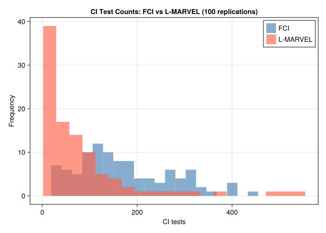

using CausalInference
using RecursiveCausalDiscovery
using CausalGraphs
using Graphs
using CairoMakie
using Statistics
using LinearAlgebra
using Random
using Printf
using DataFrames
using Combinatorics: powerset
using Distributions: Normal, quantile23 Causal Discovery: Latent Variables
The previous chapter assumed all causally relevant variables were observed. That is a strong assumption. In economics, ability, demand shocks, and peer effects are often unobserved.
When latent confounders exist, PC and RSL-D can give the wrong graph. Here I use algorithms designed for latent variables.
23.0.1 Why PC fails with latent variables
Suppose the true graph is \(X \leftarrow U \rightarrow Y\) where \(U\) is unobserved. In the observed data, \(X\) and \(Y\) are marginally correlated (through \(U\)) and no observed conditioning set separates them. PC will incorrectly draw an edge \(X - Y\) and may orient it as \(X \to Y\) or \(X \leftarrow Y\), neither of which exists in the truth.
With even one hidden common cause, the conditional independences among observed variables may not correspond to any DAG on the observed variables alone. We need a MAG/PAG representation.
23.1 Maximal Ancestral Graphs and PAGs
With latent variables, the appropriate representation is a Maximal Ancestral Graph (MAG). Over a set of observed variables \(\mathbf{O}\), a MAG encodes:
- \(X \to Y\): \(X\) is an ancestor of \(Y\) in the full DAG
- \(X \leftrightarrow Y\): \(X\) and \(Y\) have a common hidden ancestor (hidden confounder)
- No edge: \(X \perp\!\!\!\perp Y \mid Z\) for some \(Z \subseteq \mathbf{O} \setminus \{X, Y\}\)
The MAG over observed variables summarizes the causal and confounding relationships visible in the observed data without naming the latent variables.
Just as DAGs have Markov equivalence classes represented by CPDAGs, MAGs have equivalence classes represented by Partial Ancestral Graphs (PAGs). In a PAG, the mark \(\circ\) on an edge endpoint means “could be arrowhead or tail in some member of the equivalence class.”
| PAG mark | Meaning | Economic interpretation |
|---|---|---|
| \(X \to Y\) | \(X\) causes \(Y\) in every equivalent MAG | Robust causal direction |
| \(X \;\circ\!\!\!\to Y\) | Some MAGs have \(X \to Y\), others \(X \leftrightarrow Y\) (the arrowhead at \(Y\) is invariant) | Direction uncertain |
| \(X \leftrightarrow Y\) | Hidden common cause in every equivalent MAG | Definite unmeasured confounder |
| \(X \;\circ\!\!\!\!-\!\!\!\!\circ\; Y\) | Could be \(\to\), \(\leftarrow\), or \(\leftrightarrow\) | Maximally uncertain |
Reading a PAG for policy purposes:
- A definite \(X \to Y\) edge is the most useful finding: it means any intervention on \(X\) propagates to \(Y\) regardless of which specific MAG the data came from.
- A definite \(X \leftrightarrow Y\) edge is a warning: before using regression of \(Y\) on \(X\) to estimate a causal effect, you must address the hidden confounder — through an instrument, a proxy, or a natural experiment.
- \(\circ\) marks indicate what you don’t know. Additional data, temporal ordering, or experimental variation can resolve them.
23.3 FCI Algorithm
FCI is the extension of PC for latent variables. It starts from a complete graph, removes edges with CI tests, and then uses orientation rules that can produce bidirected edges for hidden common causes.
How FCI extends PC:
- Phase 1 (skeleton): Same as PC — remove edges via CI tests with growing conditioning sets.
- Phase 2 (initial orientation): Mark all edge endpoints as \(\circ\) (uncertain); orient unshielded colliders as in PC.
- Phase 3 (Possible-D-SEP pruning): For each remaining edge \(X - Y\), compute the Possible-D-SEP sets and run additional CI tests conditioning on their subsets, removing further edges. With latent variables, two non-adjacent observed nodes need not be separable by a subset of their neighbors — this stage is what makes FCI’s skeleton differ from PC’s, and it is the computationally expensive part. Colliders are then re-oriented on the pruned skeleton.
- Phase 4 (rule propagation): Apply the 10 orientation rules (Zhang 2008) that propagate known marks without creating contradictions, including rules that can produce definite \(\to\) and \(\leftrightarrow\) edges. These rules perform no CI tests and are cheap.
The extra marks let FCI say what is known and what remains uncertain, but the output is harder to read than a DAG.
sig_level = 0.01
count_fci = Ref(0)
ci_fci = (x, y, S, d) -> begin
count_fci[] += 1
fisher_z(x, y, collect(Int, S), Matrix{Float64}(d), sig_level)
end
pag_fci = fcialg(n_obs, ci_fci, data_obs)
skel_fci = SimpleGraph(pag_fci)
f1_fci = f1_score(true_obs_skel, skel_fci)
@printf "FCI: skeleton F1 = %.3f CI tests = %d\n" f1_fci count_fci[]FCI: skeleton F1 = 0.889 CI tests = 74# No `println` here: plot_fci_graph_text prints the edge list as a side effect and
# returns nothing, so wrapping it in println() appends a literal "nothing" to the
# output -- which is what the rendered page used to show.
plot_fci_graph_text(pag_fci, ["X$(obs_idx[i])" for i in 1:n_obs])X1<-X2 X1<-X7 X2o-oX5 X5o-oX7
Note
Reading the FCI text output
The text representation uses ASCII edge marks:
X1 --> X2: definite cause — \(X_1\) is an ancestor of \(X_2\) in every equivalent MAG (not necessarily a direct effect: the path may run through latent mediators)X1 <-> X2: definite hidden common cause (\(X_1 \leftrightarrow X_2\))X1 o-> X2: the \(X_1\) endpoint is uncertain; \(X_2\) endpoint is definitely an arrowheadX1 o-o X2: both endpoints uncertain; could be any of \(\to\), \(\leftarrow\), \(\leftrightarrow\)
In practice for economic research: focus first on <-> edges — these flag definite confounding and tell you where IV or proxy strategies are needed. Then examine --> edges — these are causal claims that survive across all statistically equivalent structures.
When FCI gives wrong answers: FCI assumes the CI tests are perfectly accurate (no finite-sample error). In practice, with small \(n\) or many variables, some false CI decisions propagate through the orientation rules. The skeleton quality (F1) is generally more reliable than the orientation quality.
23.4 L-MARVEL Algorithm
L-MARVEL (Latent Markov Boundary Variable Elimination; Mokhtarian et al., JMLR 2025) extends the recursive MARVEL approach to handle latent confounders. Instead of exhaustive CI-test-based Markov boundary discovery, L-MARVEL uses a Gaussian precision matrix estimator:
\[\widehat{\text{Mb}}(X) = \left\{Y : \frac{|\hat P_{XY}|}{\sqrt{\hat P_{XX} \hat P_{YY}}} > \tau\right\}\]
where \(\hat P = \hat\Sigma^{-1}\) is the precision matrix and \(\tau\) is a threshold from the Fisher-Z distribution.
In a Gaussian linear model, a zero in the precision matrix means conditional independence given all other variables. L-MARVEL uses this fact to estimate Markov boundaries with fewer CI tests.
The removability criterion changes for the latent case (Theorem 32). Recall: \(\text{Mb}(X)\) is the Markov boundary of \(X\) — the minimal conditioning set that screens \(X\) off from all other variables (estimated here via the precision matrix above rather than by exhaustive CI tests) — and \(\text{Ne}(X)\) is the set of variables directly adjacent to \(X\) in the current skeleton. Variable \(X\) is removable iff for every \(Y \in \text{Mb}(X)\) and \(Z \in \text{Ne}(X)\):
\[\underbrace{\exists\, W \subseteq \text{Mb}(X) \setminus \{Y,Z\}: Y \perp\!\!\!\perp Z \mid W}_{\text{Condition 1}} \quad\text{or}\quad \underbrace{\forall\, W \subseteq \text{Mb}(X) \setminus \{Y,Z\}: Y \not\!\perp\!\!\!\perp Z \mid W \cup \{X\}}_{\text{Condition 2}}\]
Intuition for the two conditions:
- Condition 1 is the same as the observed-variable (RSL-D) removability criterion: \(Y\) and \(Z\) can be separated by some subset of the Markov boundary.
- Condition 2 is new and handles latent variables: it captures latent-induced dependencies through the theorem’s removable-variable criterion. Loosely, when \(Y\) and \(Z\) are connected through a hidden common cause, no subset of Mb\((X)\) separates them, yet conditioning on \(X\) changes the dependence. This is not a generic d-separation rule — it should not be read as “conditioning on \(X\) blocks hidden confounding,” which would be false in general MAG/PAG reasoning. It is a theorem-specific condition (Theorem 32) on when \(X\) can be removed without losing latent-structure information; the formal statement above, not the intuition, is what the algorithm uses.
Together, the two conditions ensure that removing \(X\) does not destroy information about the latent structure connecting its neighbours.
count_lm = Ref(0)
ci_lm = (x, y, S, d) -> begin
count_lm[] += 1
fisher_z(x, y, collect(Int, S), Matrix{Float64}(d), sig_level)
end
lm_skel = l_marvel(data_obs, ci_lm)
f1_lm = f1_score(true_obs_skel, lm_skel)
@printf "L-MARVEL: skeleton F1 = %.3f CI tests = %d\n" f1_lm count_lm[]L-MARVEL: skeleton F1 = 1.000 CI tests = 14
Note
L-MARVEL output: skeleton only
Unlike FCI, L-MARVEL returns only the skeleton — undirected edges with no arrowhead or bidirected marks. This is a deliberate design choice: the recursive removal procedure identifies adjacencies efficiently but does not run the full PAG orientation phase.
This is still valuable. Knowing which pairs of variables are adjacent tells you which potential causal relationships to investigate further (with instruments, experiments, or domain knowledge). Variables with no edge are conditionally independent given some observed set — no causal relationship need be posited between them.
If you need orientations as well as skeleton, run FCI. If you only need to screen out non-adjacent pairs (the most common use case in large-\(p\) problems), L-MARVEL’s precision matrix approach is substantially faster.
23.5 Comparison
DataFrame(
Algorithm = ["FCI", "L-MARVEL"],
Output = ["PAG (orientations + skeleton)", "Skeleton only"],
Skeleton_F1 = round.([f1_fci, f1_lm], digits=3),
CI_Tests = [count_fci[], count_lm[]],
)2×4 DataFrame
| Row | Algorithm | Output | Skeleton_F1 | CI_Tests |
|---|---|---|---|---|
| String | String | Float64 | Int64 | |
| 1 | FCI | PAG (orientations + skeleton) | 0.889 | 74 |
| 2 | L-MARVEL | Skeleton only | 1.0 | 14 |
side_by_side([
(skeleton_to_admg(true_obs_skel, obs_labels), "True MAG skeleton"),
(skeleton_to_admg(skel_fci, obs_labels), "FCI — estimated skeleton"),
(skeleton_to_admg(lm_skel, obs_labels), "L-MARVEL — estimated skeleton"),
]; note="All edges shown as undirected (skeleton comparison only).")True MAG skeleton
FCI — estimated skeleton
L-MARVEL — estimated skeleton
All edges shown as undirected (skeleton comparison only).
23.6 Monte Carlo Evaluation
function evaluate_latent(seed; n_vars=8, n_samples=2000, edge_prob=0.35, n_latent=2, sig=0.01)
Random.seed!(seed)
adj = gen_er_dag_adj_mat(n_vars, edge_prob)
data_full = gen_gaussian_data(adj, n_samples)
dag = SimpleDiGraph(adj)
latent_vars = sort(randperm(n_vars)[1:n_latent])
obs_vars = setdiff(1:n_vars, latent_vars)
data_obs = data_full[:, obs_vars]
n_obs = length(obs_vars)
true_skel = true_mag_skeleton(dag, obs_vars)
cnt_fci = Ref(0)
ci_fci = (x, y, S, d) -> begin cnt_fci[] += 1; fisher_z(x, y, collect(Int, S), Matrix{Float64}(d), sig) end
pag = fcialg(n_obs, ci_fci, data_obs)
f1f = f1_score(true_skel, SimpleGraph(pag))
cnt_lm = Ref(0)
ci_lm = (x, y, S, d) -> begin cnt_lm[] += 1; fisher_z(x, y, collect(Int, S), Matrix{Float64}(d), sig) end
skel_lm = l_marvel(data_obs, ci_lm)
f1l = f1_score(true_skel, skel_lm)
(f1_fci=f1f, f1_lm=f1l, ci_fci=cnt_fci[], ci_lm=cnt_lm[])
end
mc = [evaluate_latent(s) for s in 1:100]
@printf "\nMonte Carlo averages (100 replications, n=%d, p=%d, %d latent)\n" n_samples n_vars 2
@printf "%-10s Skeleton F1 CI tests\n" "Method"
@printf "%-10s %10.3f %8.1f\n" "FCI" mean(r.f1_fci for r in mc) mean(r.ci_fci for r in mc)
@printf "%-10s %10.3f %8.1f\n" "L-MARVEL" mean(r.f1_lm for r in mc) mean(r.ci_lm for r in mc)
Monte Carlo averages (100 replications, n=2000, p=8, 2 latent)
Method Skeleton F1 CI tests
FCI 0.912 169.8
L-MARVEL 0.934 80.9let
fig = Figure(size=(650, 380))
ax = Axis(fig[1,1];
xlabel = "CI tests",
ylabel = "Frequency",
title = "CI Test Counts: FCI vs L-MARVEL (100 replications)")
hist!(ax, [r.ci_fci for r in mc]; bins=20, color=(:steelblue, 0.65), label="FCI")
hist!(ax, [r.ci_lm for r in mc]; bins=20, color=(:tomato, 0.65), label="L-MARVEL")
axislegend(ax)
fig
end
23.7 Summary
| Property | PC / RSL-D | FCI | L-MARVEL |
|---|---|---|---|
| Latent confounders | ✗ assumes none | ✓ handles | ✓ handles |
| Output | CPDAG | PAG | Skeleton |
| Orientations | ✓ | ✓ | ✗ |
| MB estimation | CI tests | CI tests | Precision matrix |
| CI complexity | PC: \(O(p^2 2^p)\) worst case; RSL-D: \(O(p \cdot d \cdot |\text{MB}|^2)\) | Same as PC | Fewer (Gaussian MB pre-filters) |
FCI and L-MARVEL serve different purposes. Use FCI when orientations matter. Use L-MARVEL when the goal is a faster skeleton screen.
23.7.1 Practical decision guide
Use PC or RSL-D when: - You are confident in causal sufficiency (all relevant variables are measured) - You want a CPDAG that you can orient further with background knowledge - RSL-D is preferred over PC when \(p > 10\) or the graph may be moderately dense
Use FCI when: - You suspect hidden confounders but don’t know where - You need edge orientations and \(\leftrightarrow\) marks to guide IV or proxy strategies - Sample size is large enough that CI-test errors don’t cascade badly through orientation rules
Use L-MARVEL when: - You suspect latent confounders and have many variables (\(p > 20\)) - The goal is to prune the adjacency graph before applying domain knowledge or estimation - Gaussian data is appropriate (precision matrix estimator requires this)
23.7.2 From discovery to estimation
Causal discovery is a first step, not a final answer. A reasonable workflow is:
- Discover — run FCI or L-MARVEL to get candidate adjacencies and, if using FCI, some edge marks
- Refine — apply temporal ordering, institutional knowledge, and exclusion restrictions to orient remaining edges
- Identify — check whether the effect of interest is identified given the refined graph (backdoor, front-door, ID algorithm)
- Estimate — use TMLE, AIPW, or the estimators in earlier chapters
Causal discovery narrows the space of possible structures. Domain knowledge still does the hard work.
Warning
Sample size requirements
L-MARVEL’s Gaussian MB estimator requires \(n > p + 1\) samples. With many variables and limited data, fall back to CI-test-based MB estimation by passing a custom mb_estimator to l_marvel.
Note
Going further: orientation in the latent case
FCI’s PAG output distinguishes definite causes (\(\to\)), definite hidden common causes (\(\leftrightarrow\)), and uncertain cases (\(\circ\)). The PAG can be combined with background knowledge such as temporal ordering to further orient edges before estimation.
23.8 How Much Does Causal Discovery Help in Economics?
Recovering the MAG skeleton is still far from recovering the full DAG. Much is still missing:
| What is recovered | What is still missing |
|---|---|
| L-MARVEL skeleton | Edge directions; direct cause vs. hidden common cause; latent nodes |
| FCI PAG | Unique MAG; latent nodes; most edges still carry \(\circ\) marks |
| True MAG | Latent nodes and their connections |
| Full DAG | Nothing — this is the goal |
The core econometric question is almost always “what is the causal effect of \(X\) on \(Y\)?” Causal discovery with latent variables does not answer this directly. A definite \(X \leftrightarrow Y\) in a PAG tells you confounding exists — but not how to remove it. Without oriented edges you cannot even check whether the effect is identified, let alone estimate it.
Where these methods do add value in economics:
Falsifying structural models. If your model implies \(X \perp\!\!\!\perp Z \mid W\), test it. A rejection means the model’s independence assumptions are inconsistent with the data — discovery tells you which assumptions fail before you commit to a full structural estimation.
Flagging where instruments are needed. A definite \(X \leftrightarrow Y\) in the PAG is a data-driven diagnostic: OLS of \(Y\) on \(X\) is biased, and you need an instrument, proxy, or natural experiment. Discovery does not supply the instrument but tells you where to look for one.
High-dimensional variable selection. With many candidate controls, knowing which pairs are conditionally independent prunes the problem before applying identification strategies. This is most useful in settings with \(p > 20\) variables where theory does not specify the full graph.
Hypothesis generation when theory is silent. For new economic phenomena — platform markets, fintech, peer effects in novel settings — where theory does not give a strong causal ordering, discovery algorithms generate hypotheses worth investigating with better-powered research designs.
Causal discovery is a complement to IV, RD, DiD, and synthetic control, not a substitute. It is most useful early in a project, as a diagnostic and hypothesis-generating tool.